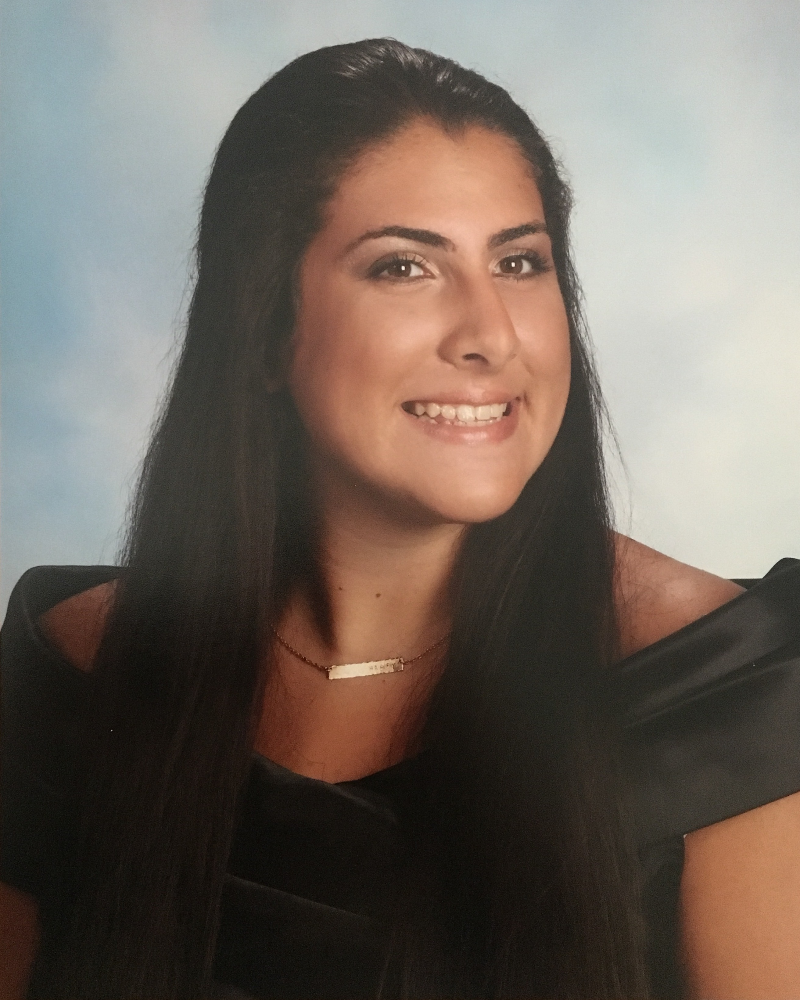

FLORENTINA SERGIOU
First year Master's student at New York University - Tandon School of Engineering studying Management of Technology. Graduated with a B.S. in Integrated Digital Media with double minors in Sustainable Urban Environments and Business of Entertainment, Media, & Technology from NYU in May 2021. I have been published by NASA five times, had my artwork flown on a flag in Rockefeller Center, and currently playing level 1,781 on Candy Crush.